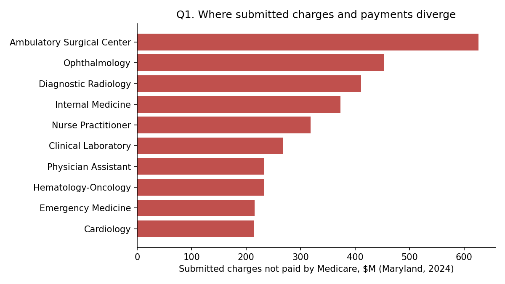
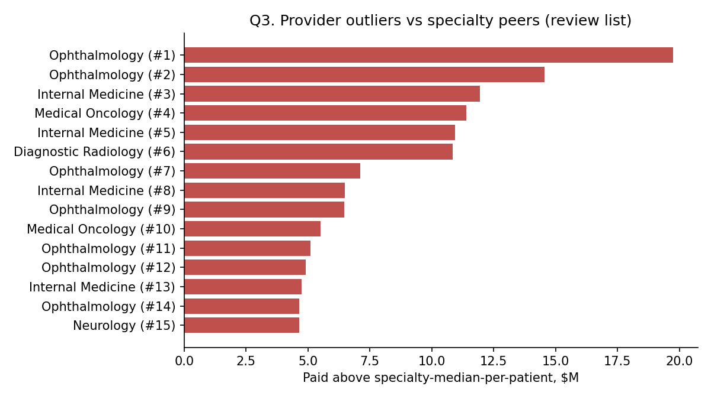
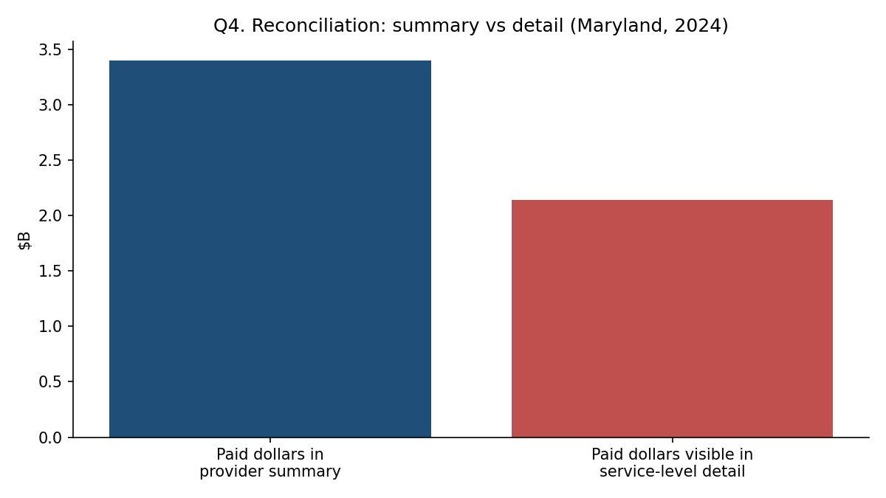
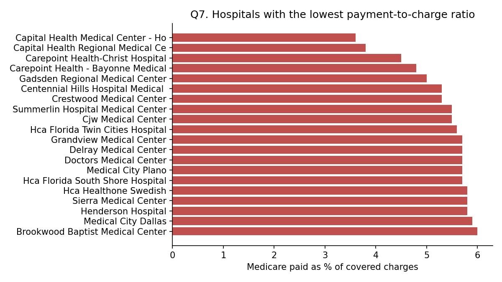

About
I work on healthcare payments analytics: reconciliation, data quality and reporting that people can trust. I like questions that tie data to business impact, and I show my work in SQL and Python on real public data.
SQLPythonDuckDBPower BITableauData qualityReconciliationETL
Project: Healthcare Payments Analysis
How do Medicare dollars move from charges to payments? An end-to-end analysis of real Medicare payment data and the federal exclusion list: Python ingest, SQL in DuckDB, seven business questions, charts and a written findings doc. No synthetic data.
$7.91Bsubmitted charges analyzed (Maryland, 2024)
27%of submitted charges paid by Medicare
7business questions, each one SQL file
63%of summary dollars visible in service detail




Contact
Find me on LinkedIn or GitHub, or email me at itsmahesh46@gmail.com.